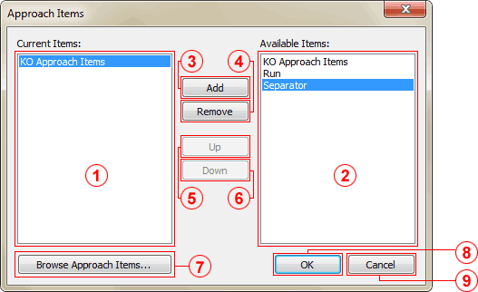

The Approach Items window allows for inserting additional programmatic elements into the Approach Items menu as well as changing the order in which elements appear in the menu. It can be accessed by pressing the Options... button next to the Toggle Approach Items checkbox on the Features tab.

Current Items list
Displays elements currently added to the menu. Some elements render as lists while others represent a single item.
Available Items list
Displays elements available for being added into the menu.
Add button
Adds the element selected in the Available Items list to the Current Items list.
Remove button
Removes the selected element from the Current Items list.
Up button
Moves the selected element from upwards in the Current Items list.
Down button
Moves the selected element from downwards in the Current Items list.
Browse Approach Items button
Displays the contents of the KO Approach Items directory in Windows Explorer allowing for content administration.
OK button
Confirms the changes and closes the window.
Cancel button
Discards the changes and closes the window.
After designing the Approach Items menu the way you prefer, press OK to confirm your changes. You must then press OK on the Features tab to make your new settings take effect.